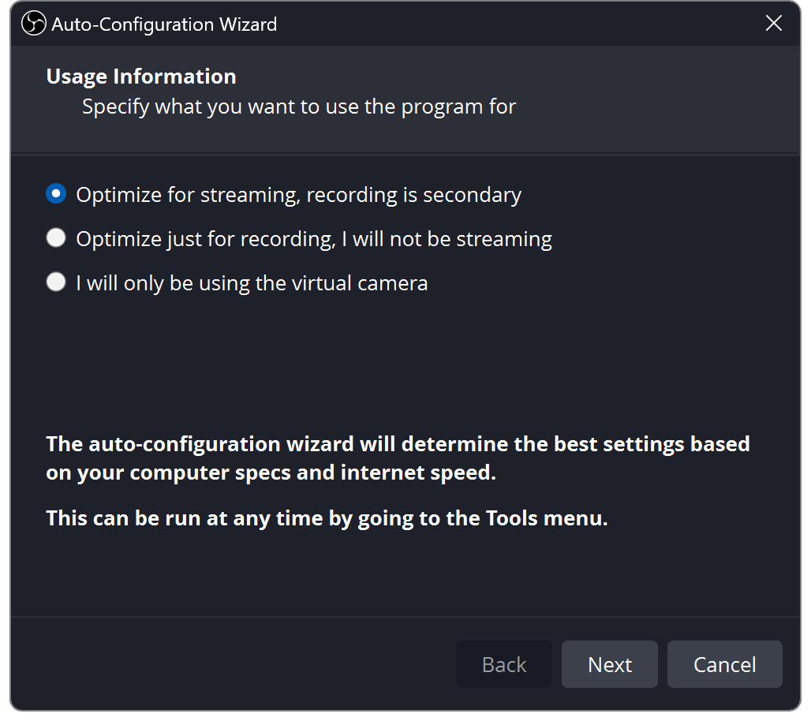
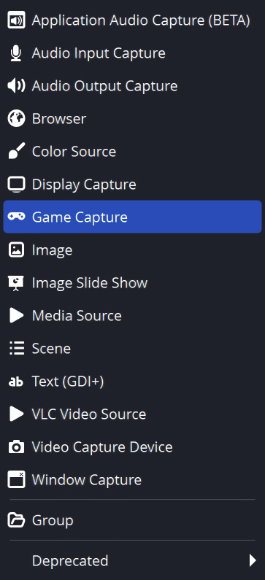
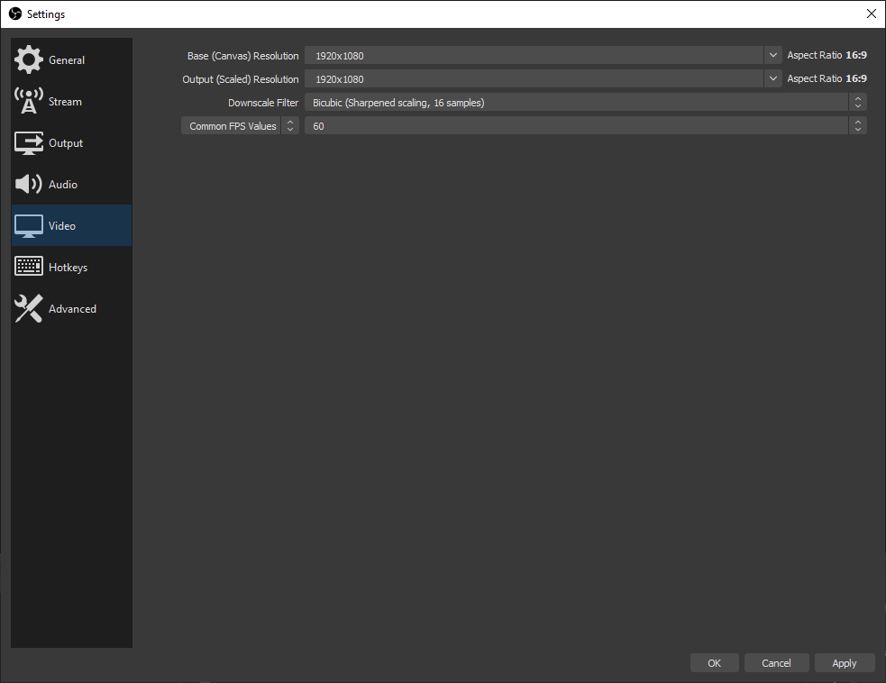
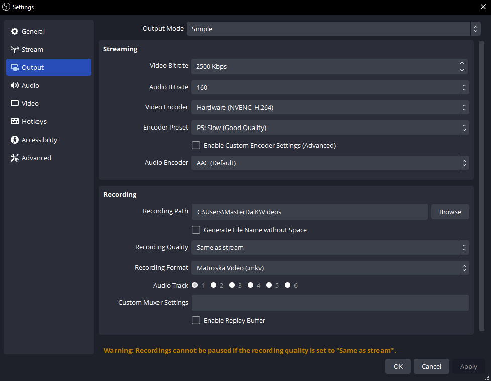
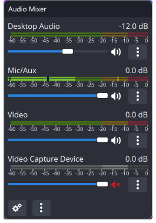
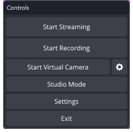

Laske OBS-il teha esimene seadistus
- Installige OBS Studio ja avage see.
- Valige Tööriistad → Automaatse seadistamise viisard.
- Valige voogesitus või salvestamine, järgige juhiseid ja rakendage sätteid.
Lubage arvuti küsimise korral juurdepääs kaamerale, mikrofonile ja ekraani jäädvustamisele.
Valimisel avanevad ekraanipildid täissuuruses. Sildid võivad olenevalt OBS-i versioonist veidi erineda.


Ehitage üks stseen
Üks stseen on paigutus. Iga allikas on midagi selle sees.
Vajutage + jaotises Stseenid andke oma paigutusele nimi ja vajutage seejärel + jaotises Allikad.
- Kaamera / videohõivekaart
- Videosalvestusseade
- Mäng Windowsis
- Mängu jäädvustamine
- Rakendus / terve monitor
- Akna/ekraani jäädvustamine
- Vestlus või märguanded
- Brauser
Suuruse muutmiseks lohistage nurki. Loendi ülemised allikad katavad alumisi. Peitmiseks kasutage silmaikooni ja liigutamise takistamiseks lukku.
Stseeni vahetamine ja macOS
MacOS-is kasutage macOS Screen Capture akna või ekraani jaoks.
Stseeni muudatused lähevad tavaliselt otse väljundisse. Stuudiorežiim võimaldab stseeni ette valmistada ja seejärel vajutada Üleminek. Jagatud allika ja heli muudatused võivad reaalajas väljundit siiski mõjutada.
Valige Lisa olemasolev allika taaskasutamiseks teises stseenis.


Valige oma video suurus
Avatud Seaded → Video.
- Lõuend
- Teie paigutuse suurus
- Väljund
- Teie saadetud video
- 30 kaadrit sekundis
- Rääkimine / kergem töökoormus
- 60 kaadrit sekundis
- Sujuv kiire liikumine
Lihtne algus: 1920 × 1080 lõuend, 1280 × 720 väljund, 30 kaadrit sekundis.
Portreevideo jaoks kasutage 1080 × 1920 lõuendit ja paigutage allikad ümber, et need sobiksid.


Andke oma protsessorile puhkust
sisse Seaded → Väljund, valige riistvara H.264 kodeerija. Spetsiaalne riistvara tegeleb video tihendamisega, vähendades protsessori kasutamist.
- NVIDIA
- NVENC H.264
- AMD
- AMD HW H.264 / AVC
- Intel
- QuickSync / QSV H.264
- Apple Silicon
- Apple VT H264 Hardware
Riistvaravalikut pole? Kasutage x264 → veryfast ja alustage eraldusvõimega 720p30.
Kodeerija puudub või arvuti on ülekoormatud?
Kontrollige riistvaratuge ja värskendage graafikadraiverit. OBS vajab stseenide joonistamiseks endiselt GPU jõudlust; kui see jääb hätta, piirake mängu kaadrisagedust või vähendage väljundi kaadrisagedust.
Kui teie Maci riistvarakooder ei suuda CBR-i pakkuda, kasutage x264. Kodeerija ühilduvus.


Ühendage oma platvorm
Seaded → Voog: ühendage oma konto või kleepige selle armatuurlaualt serveri URL ja privaatne voovõti.
Käsitsi väljundi sätete jaoks valige Väljund → Täpsem → Voogesitus: CBR, 2-sekundilised võtmekaadrid, ja AAC stereo. Avage allpool oma platvorm.
TwitchStandard H.264
| Video | Bitikiirus |
|---|---|
| 720p30 | 3,000 |
| 720p60 / 1080p30 | 4,500 |
| 1080p60 | 6,000 |
Heli: kuni 160 kbps. Twitchi seaded.
Enhanced Broadcasting saadab mitu kvaliteedivarianti ja vajab eraldi ribalaiuse varu.
YouTubeH.264 soovituslikud väärtused
| Video | Bitikiirus |
|---|---|
| 720p30/60 | 8,000 |
| 1080p30 | 14,000 |
| 1080p60 | 17,000 |
Heli: 128 kbps, 44,1 kHz stereo. Need on soovitused, mitte miinimumid. YouTube'i seaded.
Toetatud AV1 / HEVC kodeeringuga on vastavad sihtmärgid 6 000 / 10 000 / 12 000 kbps.
KickH.264 · Nõutav CBR
| Video | Bitikiirus |
|---|---|
| Proovige 720p30 | 3,000–4,000 |
| Kuni 1080p60 | 8000 max. |
Vahemiku alumine ots sobib esimeseks katseks. Proovige heli bitikiirust 160 kbit/s; kasutage stereoheli kuni 48 kHz sagedusega. Kick seaded.
Jätke üleslaadimiskiirusele varu. 6000 kbit/s vajab umbes 6 Mbit/s, millele lisanduvad heli ja protokolli lisakulu. Kui ühendusest ei piisa, vähendage bitikiirust või eraldusvõimet.
2026. aasta oktoobri juhis. Järgige oma platvormi praegusi nõudeid. Facebooki või TikToki puhul veenduge esmalt, et teie konto pakub välise kodeerija ühendust.
Muutke oma hääl kergesti kuuldavaks
- Valige oma mikrofon jaotises Seaded → Heli.
- Rääkige tavaliselt. Püüdke hoida tipptaset vahemikus –12 kuni –6 dBFS; vältige 0-ni jõudmist.
- Vähendage mängu, muusika ja märguannete helitugevust, kuni kõne on selge.
Jäädvustage iga heli üks kord. Kasutage töölaua heli kogu väljundseadme jaoks või eraldi rakenduse jäädvustamist. Mõlema jäädvustamine võib heli kahekordistada.
Rakenduste heli-, macOS-i ja mikrofoni filtrid
Windows: kasutage Rakenduse helihõive. macOS 13 või uuema puhul kasutage OBS-i macOS-i heli/ekraani jäädvustamine.
Mikrofon → Filtrid: proovige kerget mürasummutust, seejärel kompressorit ja piirajat. Lisage ükshaaval ja kuulake.


Valige, mida kuulete
Valige kõrvaklapid Seaded → Heli → Täpsem → Monitooringuseade. Seejärel avage mikseri Täpsemad heliomadused.
Monitooring väljas
Kõrvaklapid Ei
Voog Jah
Tavaliselt sobib teie mikrofoni ja juba kuuldavate mängude jaoks.
Ainult monitooring (väljund vaigistatud)
Kõrvaklapid Jah
Voog Ei
Kuulake ilma allikat otse väljundisse saatmata.
Monitor ja väljund
Kõrvaklapid Jah
Voog Jah
Kasulik märguannete või TTS-i puhul, mida soovite ka ise kuulda.
Eeldusel, et allikas pole vaigistatud ja kuulub väljundrajale. „Monitor Off” ei vaigista otseülekannet.
Väldi kaja: ärge jäädvustage monitooringuseadet uuesti töölauaheli kaudu. Nii võib ka „Ainult monitooring” heli vaatajateni jõuda. Hoidke platvormi otseülekandepleier vaigistatud.
Lisage vestluse või märguande ülekate
- Kopeerige ülekatte URL teenusest Social Stream Ninja.
- Valige Allikad → + → Brauser ja kleepige see. Hoidke oma seansi ja parooli valikud alles.
- Määrake ülekatte suurus; kasutage 1920 × 1080 kogu kaadrit katva rõhtsa ülekatte jaoks.
- TTS-i või märguannete jaoks lubage Heli juhtimine OBS-i kaudu.
Paigutage see mängu või kaamera kohale. Saatke testsõnum; esiletõstetud sõnumi ülekatte kasutamisel valige sõnum SSN-i dokist.
Tühi ülekate või korduv heli?
Kontrollige, kas seanss ühtib teie vestlusallikaga. Värskendage brauseriallikat. Jätke TTS-i esitamiseks ainult üks koopia.
Pideva vestluse jaoks jätke automaatne väljalülitamine ja stseeni aktiveerimise värskendamine esialgu välja. SSN-i ülekatte seadistamine · TTS-i seadistamine.

Salvestage minut. Seejärel minge otseülekandesse.
- Valige salvestuskaust Seaded → Väljund.
- Vajutage Alustage salvestamist. Rääkige, esitage heli ja vahetage stseene.
- Peatage salvestus ja vaadake faili. Kontrollige helitugevust, kadreeringut ning pildi ja heli sünkroonsust.
- Määrake platvormil ülekande pealkiri ja nähtavus ning seejärel Alusta voogesitust. Kontrollige selle eelvaadet ja voo seisundit; mõned platvormid nõuavad ka Tehke otseülekanne.
Nupp Alusta voogesitust võib käivitada avaliku otseülekande. Võimaluse korral kasutage privaatset testi. Kui olete lõpetanud, peatage voogesitus ja kinnitage, et platvormi sündmus on lõppenud.
Salvestusvorming ja eraldi helirajad
MKV talub katkestatud salvestust. Kasutage Fail → Salvestiste ümberpakkimine salvestise hiljem MP4-ks teisendamiseks. Uus OBS pakub ka katkestustele vastupidavat Hybrid MP4/MOV vormingut.
Heliradade eraldi töötlemiseks jätke täielik miks rajale 1, määrake mikrofon ja mäng lisaheliradadele jaotises Advanced Audio Properties ning lubage need salvestamise seadetes.


Kui midagi tundub valesti
Avatud Vaade → Statistika kitsaskoha tuvastamiseks.
Võrgus kaotatud kaadrid
Vähendage bitikiirust; proovige juhtmega Etherneti.
Renderdusviivitus
Piirake mängu kaadrisagedust; lihtsustage stseeni.
Kodeerimise viivitus
Kasutage riistvaralist kodeerimist või vähendage väljundi kaadrisagedust.
Vaikne väljund
Kontrollige vaigistust, jälgimisrežiimi ja heliriba.